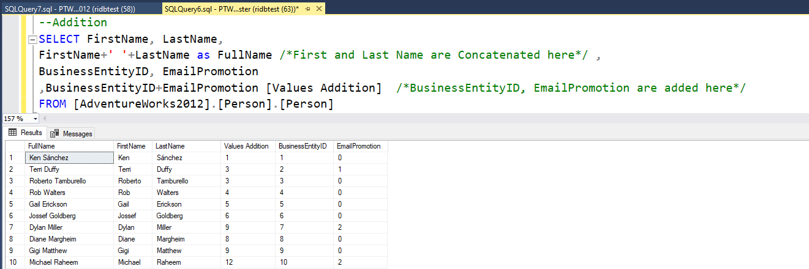
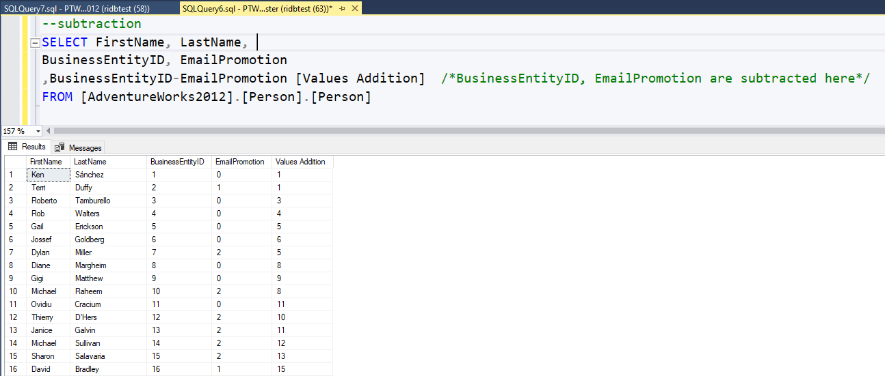
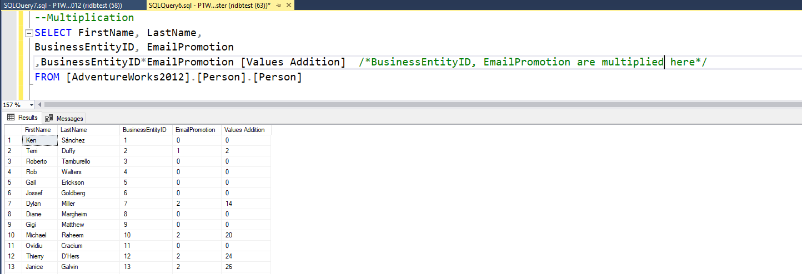
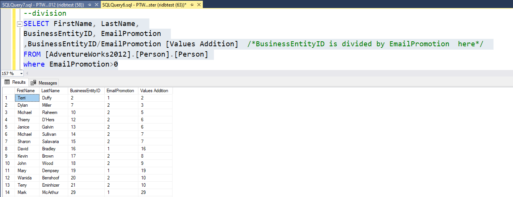
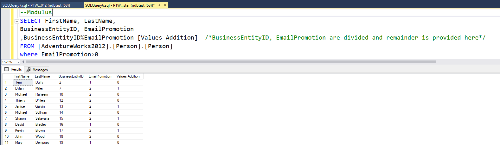

Examples on how we use these Operators
Here are some Screenshots with real time results of how you can use the Operators. If used in correct way , they can help is powerful SQL transformations , data mining , data analysis.
Addition
Subtraction
Multiplication
Division
Modulus
We will use two values 25 and 20 for this operation.
SQL ADDITION Operator
Addition(+) operator add two values on left and right, this can be used ad a Concatenation operator as well.
Notice the column names 'Fullname' and 'Values Addition' to get an idea.
We will use two values 25 and 20 for this operation.
SQL SUBTRACTION Operator
Subtraction(-) operator subtractions two values on left from the right.
Notice the column 'Values Addition' to get an idea.
We will use two values 25 and 20 for this operation.
SQL MULTIPLICATION Operator
Multiplication(*) operator multiplies two values on left and the right.
Notice the column 'Values Addition' , compare it to column 3,4 to get an idea.
We will use two values 25 and 20 for this operation.
SQL DIVISION Operator
Division(/) operator divides two values - left value over right value.
Notice the column 'Values Addition' , compare it to column 3,4 to get an idea. Notice how we use where clause to make sure denominator does not have 0.
We will use two values 25 and 20 for this operation.
SQL MODULUS Operator
Modulus(%) operator divides two values - left value over right value and gives the remiander.
Notice the column 'Values Addition' , compare it to column 3,4 to get an idea. Notice how we use where clause to make sure denominator does not have 0.
